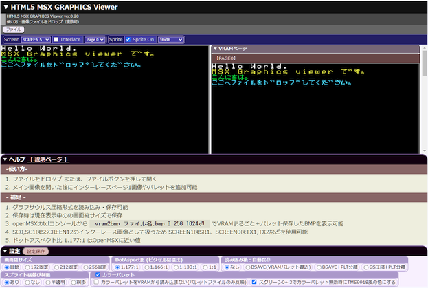
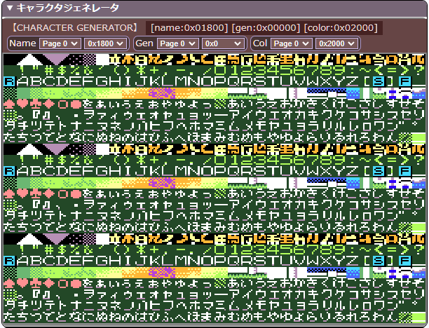

ブラウザ版 MSX画像ビューア
グラサウルス画像対応の、SCREEN0～SCREEN12の画像を表示・変換保存可能なツールです。
ローカル実行用ファイル一式をダウンロード・展開して使用することをお勧めします。
vram2bmp ファイル名.bmp 0 256 1024で保存したBMPに対応メインターゲットはスクリーン5～12のMSX画像です。
HTML5+javascript ES6の勉強+遊びの為に作成しているので、いつの間にか遊び機能が増えていくかもしれません。

ファイルをウィンドウにドロップするか
ファイルボタンを使用してファイルを開いてください。
インターレースモード用画像かどうかは拡張子で判定されます。
（拡張子一覧）
メイン画像ファイルと判定されると、読み込み済みファイルリストと画面をクリアしてから読み込みます。
その為、複数ファイルで構成された画像の場合は順番に開く必要があります。
順番は
です。
この順番でドロップするか、まとめてドロップしてください。
まとめてドロップした場合は自動的に読み込む順番を整えて読み込みます。
この時、1～3の分類それぞれにつき、各1個だけ読み込みます。
また、ファイルボタンから開くことも可能です。
（その場合も複数ファイル指定可能です）
ローダーのサンプルがあります。
https://github.com/uniskie/MSX_MISC_TOOLS/tree/main/LOADSRD
ビューアー・ローダーともに、 ソースコードの再利用はご自由にどうぞ。
画像ファイルの再利用はご遠慮ください。
読み込み済みファイルがあれば保存・圧縮保存が可能です。
また、表示されている画像を右クリックすると、ブラウザの機能を使ってPNGなどの画像として保存できます。


| ボタン名 | 説明 | 補足 |
|---|---|---|
| PLT保存 | カラーパレットデータを保存します | グラフサウルスと違い、スロット1本分の32バイトのファイルです。 |
| BSAVE (VRAMパレット書込) | VRAMのカラーパレットテーブルを含む範囲でBSAVEベタ形式保存 | VRAMパレットテーブルに現在のパレットを書き込みます。保存サイズがVRAMパレットテーブルより小さければ、テーブルを含む領域まで保存します。 |
| BSAVE (画素のみ) | カラーパレットを含まない BSAVEベタ形式保存 | VRAMパレットテーブルにパレットを書き込みません。VRAMパレットテーブルを考慮せず、ピクセルデータの範囲までを保存します。 |
| GS圧縮 (画素のみ) | カラーパレットを含まない グラフサウルス圧縮形式保存 | VRAMパレットテーブルにパレットを書き込みません。VRAMパレットテーブルを考慮せず、ピクセルデータの範囲までを保存します。 |
| PLT保存 | カラーパレットデータを保存します | グラフサウルスと違い、スロット1本分の32バイトのファイルです。 |

各種設定を保存、読み込み出来ます。
保存時には gsrle_html_config.json というJSONファイルが保存されます。
任意の名前.jsonに変更して保管しておくと、必要なときに素早く設定を変更できます。
読み込み時はJSONファイルを開くかドロップしてください。
保存・読み込みされる設定内容：
BLOADで読み込むときに、サイズ&hFFFFを越えるファイルは読みだしたデータが化けます。
例)
START=0, END=FFFFを越えるファイル
ファイル全体では&h10007バイト以上
- VRAM全体セーブ
- SCREEN7,8,10,12での1ページ丸ごと保存
そのため、BSAVEファイルヘッダのENDエントリはサイズが&hFFFFを越えない値を書き出します。 ファイル自体は最後まで書き込まれまます。
例)
VRAM全体セーブ
START=0, END=FFFE→START=0, END=FFFE
実際にファイルに書きだされるVRAMの範囲は&h0000～&hFFFF
ファイル全体のサイズは&h10007バイトSCREEN7,8,10,12での1ページ丸ごと保存
START=0, END=FFFE→START=0, END=FFFE
実際にファイルに書きだされるVRAMの範囲は&h0000～&hFFFF
ファイル全体のサイズは&h10007バイト
この対策によりデータは化けなくなりますが
BLOADでは&h0000～&hFFFEまでしか読み込めません。
全体を読みだしたいときは独自のローダーを使用し、
ファイルサイズを見て読みだすようにすれば、
データの最後まで読み込むことが出来ます。
( https://github.com/uniskie/MSX_MISC_TOOLS/tree/main/LOADSRD など)
openMSXではvram2bmpでVRAM全体のRAWファイルに相当するBMPファイルを出力できます。
vram2bmp ファイル名.bmp 0 256 1024でVRAM全体保存

Note: 保存先について
カレントフォルダは 基本的にOpenMSXを起動した実行ファイルと同じ場所になっています。
- OpenMSX Catapultから実行した場合は
OpenMSX\Catapult\bin- openmsx.exeを直接実行した場合は
OpenMSX\cd（チェンジディレクトリ）コマンドでカレントディレクトリを変えておくとファイルが整理しやすくて良いかもしれません。Note: 保存先の変更例
マイドキュメント\openMSX\にbmpフォルダを作成- コンソールから
cd $env(OPENMSX_USER_DATA)/bmp→ マイドキュメント\openMSX\bmp\ に保存されるようになる
openMSX起動時に自動的に実行されるスクリプトに
cd $env(OPENMSX_USER_DATA)を書いておけば良いかもしれません。
（自分はユーザーフォルダに自動実行スクリプトを配置する方法が分からないのでやっていません）
vram2bmpで保存されるのはRAWイメージなので普通のBMPとして表示すると実際の画面に表示されている映像とは異なる見た目になります。
当ビューアではそのVRAM RAWイメージを読み込んで、MSX上での見え方で表示することが可能です。
（画面モードや、ベースアドレスは自分で指定してください）
自分向け遊び機能ですが、内容確認などの使い道はあるかもしれません。


HYDLIDE3 (C) T&E SOFT / D4 Enterprise
スクリーン0～4ではキャラクタジェネレータ欄が表示されます。

スクリーン1～12ではスプライト欄が表示されます。

VDPで設定可能な値がドロップダウンリストに登録されていますので、そこから選択可能です。
※ SPRCOL (スプライトカラーテーブル) はSPRATR (スプライトアトリビュートテーブル) - 512にVDPが自動決定します。
画像の読み込みが終わった後に指定の形式で自動保存するオプション

| 形式 | 内容 | パレットデータ |
|---|---|---|
| BSAVE(VRAMパレット書込) | BSAVE形式（VRAMカラーパレットテーブルを含む）画像ファイル | BSAVEファイルに含む |
| BSAVE+PLT分離 | BSAVE形式（VRAMカラーパレットテーブルを含まない）画像ファイルと、PLTファイルのセット | PLTファイル |
| GS圧縮+PLT分離 | グラフサウルス圧縮形式画像ファイルと、PLTファイルのセット | PLTファイル |
VDPシミュレートの検証で付けている処理です。
▲▼VScroll
縦スクロールスイッチ
スプライトごと移動する
◀▶HScroll
横スクロールスイッチ
スプライトは影響をうけない
HScroll Mask
画面左に8ドット幅の周辺色マスクを表示する
スプライトもマスクされる
2Page HScroll
VDP R#25 bit0：2画面横スクロール
表示ページは奇数を指定する
1ページのVRAMサイズ
0x80000x10000インターレースモードで2ページをフリップさせて疑似的に424ライン表示する機能

Interlaceにチェックを付けるとインターレース＆フリップモードになります。
市販ソフトではDPSSGがSCREEN7で使用して、VGAに近い解像度を実現していました。
※ SCREEN0～4では使用できません
※ 2Page HScrollと同様に強制的に表示ページを奇数ページに変更します。
拡張子で判定して、インターレースモードでの読込先ページを決定します。
| 拡張子 | SCREEN番号 | インターレースモード | BSAVE拡張子 | GS拡張子 | 補足 |
|---|---|---|---|---|---|
| .SC2 | SCREEN 2 | non-interlace | .SC2 | .SR2 | BSAVE |
| .SC3 | SCREEN 3 | non-interlace | .SC3 | .SR4 | BSAVE |
| .SC4 | SCREEN 4 | non-interlace | .SC4 | .SR3 | BSAVE |
| .SC5 | SCREEN 5 | non-interlace | .SC5 | .SR5 | BSAVE |
| .SC6 | SCREEN 6 | non-interlace | .SC6 | .SR6 | BSAVE |
| .SC7 | SCREEN 7 | non-interlace | .SC7 | .SR7 | BSAVE |
| .SC8 | SCREEN 8 | non-interlace | .SC8 | .SR8 | BSAVE |
| .S10 | SCREEN 10 | non-interlace | .S10 | .SRA | BSAVE |
| .S12 | SCREEN 12 | non-interlace | .S12 | .SRC | BSAVE |
| .S50 | SCREEN 5 | interlace page:0 | .S50 | .R50 | BSAVE interlace |
| .S51 | SCREEN 5 | interlace page:1 | .S51 | .R51 | BSAVE interlace |
| .S60 | SCREEN 6 | interlace page:0 | .S60 | .R60 | BSAVE interlace |
| .S61 | SCREEN 6 | interlace page:1 | .S61 | .R61 | BSAVE interlace |
| .S70 | SCREEN 7 | interlace page:0 | .S70 | .R70 | BSAVE interlace |
| .S71 | SCREEN 7 | interlace page:1 | .S71 | .R71 | BSAVE interlace |
| .S80 | SCREEN 8 | interlace page:0 | .S80 | .R80 | BSAVE interlace |
| .S81 | SCREEN 8 | interlace page:1 | .S81 | .R81 | BSAVE interlace |
| .SA0 | SCREEN 10 | interlace page:0 | .SA0 | .RA0 | BSAVE interlace |
| .SA1 | SCREEN 10 | interlace page:1 | .SA1 | .RA1 | BSAVE interlace |
| .SC0 | SCREEN 12 | interlace page:0 | .SC0 | .RC0 | BSAVE interlace |
| .SC1 | SCREEN 12 | interlace page:1 | .SC1 | .RC1 | BSAVE interlace |
| .SR2 | SCREEN 2 | non-interlace | .SC2 | .SR2 | GRAPH SAURUS |
| .SR4 | SCREEN 3 | non-interlace | .SC3 | .SR4 | GRAPH SAURUS |
| .SR3 | SCREEN 4 | non-interlace | .SC4 | .SR3 | GRAPH SAURUS |
| .SR5 | SCREEN 5 | non-interlace | .SC5 | .SR5 | GRAPH SAURUS |
| .SR6 | SCREEN 6 | non-interlace | .SC6 | .SR6 | GRAPH SAURUS |
| .SR7 | SCREEN 7 | non-interlace | .SC7 | .SR7 | GRAPH SAURUS |
| .SR8 | SCREEN 8 | non-interlace | .SC8 | .SR8 | GRAPH SAURUS |
| .SRA | SCREEN 10 | non-interlace | .S10 | .SRA | GRAPH SAURUS |
| .SRC | SCREEN 12 | non-interlace | .S12 | .SRC | GRAPH SAURUS |
| .SRS | SCREEN 12 | non-interlace | .S12 | .SRS | GRAPH SAURUS |
| .R50 | SCREEN 5 | interlace page:0 | .S50 | .R50 | GRAPH SAURUS interlace |
| .R51 | SCREEN 5 | interlace page:1 | .S51 | .R51 | GRAPH SAURUS interlace |
| .R60 | SCREEN 6 | interlace page:0 | .S60 | .R60 | GRAPH SAURUS interlace |
| .R61 | SCREEN 6 | interlace page:1 | .S61 | .R61 | GRAPH SAURUS interlace |
| .R70 | SCREEN 7 | interlace page:0 | .S70 | .R70 | GRAPH SAURUS interlace |
| .R71 | SCREEN 7 | interlace page:1 | .S71 | .R71 | GRAPH SAURUS interlace |
| .R80 | SCREEN 8 | interlace page:0 | .S80 | .R80 | GRAPH SAURUS interlace |
| .R81 | SCREEN 8 | interlace page:1 | .S81 | .R81 | GRAPH SAURUS interlace |
| .RA0 | SCREEN 10 | interlace page:0 | .SA0 | .RA0 | GRAPH SAURUS interlace |
| .RA1 | SCREEN 10 | interlace page:1 | .SA1 | .RA1 | GRAPH SAURUS interlace |
| .RC0 | SCREEN 12 | interlace page:0 | .SC0 | .RC0 | GRAPH SAURUS interlace |
| .RC1 | SCREEN 12 | interlace page:1 | .SC1 | .RC1 | GRAPH SAURUS interlace |
| 拡張子 | SCREEN番号 | インターレースモード | BSAVE拡張子 | GS拡張子 | 補足 |
|---|---|---|---|---|---|
| .TX1 | SCREEN 0 WIDTH 40 | non-interlace | .TX1 | .TX1 | BSAVE / GS |
| .TX2 | SCREEN 0 WIDTH 80 | non-interlace | .TX2 | .TX2 | BSAVE / GS |
| .GR1 | SCREEN 1 | non-interlace | .GR1 | .GR1 | BSAVE / GS |
| .SR0 | SCREEN 0 WIDTH 40 | non-interlace | .SR0 | .SR0 | BSAVE / GS |
| .SR1 | SCREEN 1 | non-interlace | .SR1 | .SR1 | BSAVE / GS |
| 拡張子 | SCREEN番号 & インターレースモード | BSAVE拡張子 | GS拡張子 | 補足 |
|---|---|---|---|---|
| .BIN' | 現在の画面モード | .BIN | .BIN | 汎用 |
| .SPR' | 現在の画面モード | .SPR | .SPR | スプライト |
| .SPC' | 現在の画面モード | .SPC | .SPC | スプライトカラー |
| .NAM' | 現在の画面モード | .NAM | .NAM | SC2 パターンネーム |
| .COL' | 現在の画面モード | .COL | .COL | SC2 パターンカラー |
| .GEN' | 現在の画面モード | .GEN | .GEN | SC2 パターンジェネレータ |
| .PAT' | 現在の画面モード | .PAT | .PAT | SC2 パターンジェネレータ |
| .NM' | 現在の画面モード | .NM' | .NM' | SC2 パターンネーム |
| .CL' | 現在の画面モード | .CL' | .CL' | SC2 パターンカラー |
| .GN' | 現在の画面モード | .GN' | .GN' | SC2 パターンジェネレータ |
| .CL0' | 現在の画面モード | .CL0 | .CL0 | SC2 パターンカラー |
| .CL1' | 現在の画面モード | .CL1 | .CL1 | SC2 パターンカラー |
| .CL2' | 現在の画面モード | .CL2 | .CL2 | SC2 パターンカラー |
| .GN0' | 現在の画面モード | .GN0 | .GN0 | SC2 パターンジェネレータ |
| .GN1' | 現在の画面モード | .GN1 | .GN1 | SC2 パターンジェネレータ |
| .GN2' | 現在の画面モード | .GN2 | .GN2 | SC2 パターンジェネレータ |
| .SCR' | 現在の画面モード | .SCR | .GSR | RAWイメージ |
| .GSR' | 現在の画面モード | .SCR | .GSR | RAWイメージ |
| .BMP' | 現在の画面モード | .SCR | .GSR | RAWイメージ - OpenMSX vram2bmp の非圧縮BMP |
| .VRM' | 現在の画面モード | .VRM | .GSR | RAWイメージ - 新10倍で読み込み変換したもの等 |
本ツールにはMSX画像形式からの圧縮や展開のみをサポートしています。
PNGなどからの変換機能が欲しい場合は他のツールを使用してください。
(※vram2bmpで保存したbmpはVRAMのRAWイメージなので特別にそのまま表示可能です。)
BMP to MSX
自分が良く使用しているのは、hra1129さんの変換ツール BMP to MSX です。
https://github.com/hra1129/bmp2msx
その他ツール紹介ページ
Gigamax Online Webアプリ多め！ネットで見つけたMSX向け画像編集ツールまとめ
音楽データや画像ファイルの再利用はご遠慮ください。（全体的に）
画像ファイル以外のHTML、CSS、JSファイルはご自由に利用してください。 改変なども可能です。
転載や改変についてサポートは致しかねます。
また、このツールの使用による問題が起きた場合に、当方は責任を負わないものとします。
2023/09/15 ver.0.22
2023/09/13 ver.0.21
2023/09/11 ver.0.20
2023/09/11 ver.0.19
2023/09/10 ver.0.18
2023/09/09 ver.0.17
2023/09/09 ver.0.16
2023/09/09 ver.0.15
2023/09/09 ver.0.14
2023/09/09 ver.0.13
2023/09/08 ver.0.12
VRAM2bmp filename.bmp 0 256 1024 として保存したBMPに対応
（画面モードやベースアドレスは自分で指定）2023/09/05
それ以前